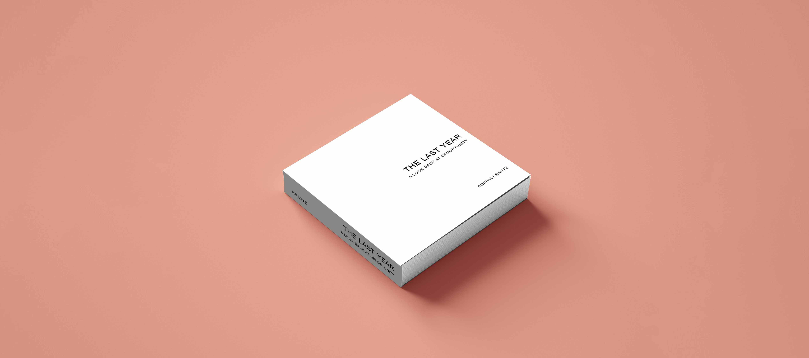
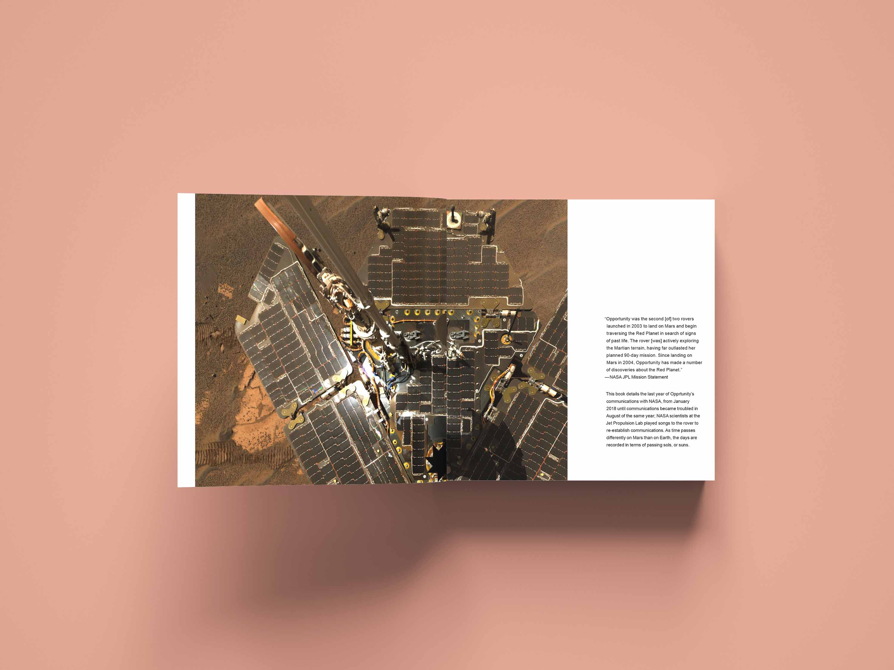
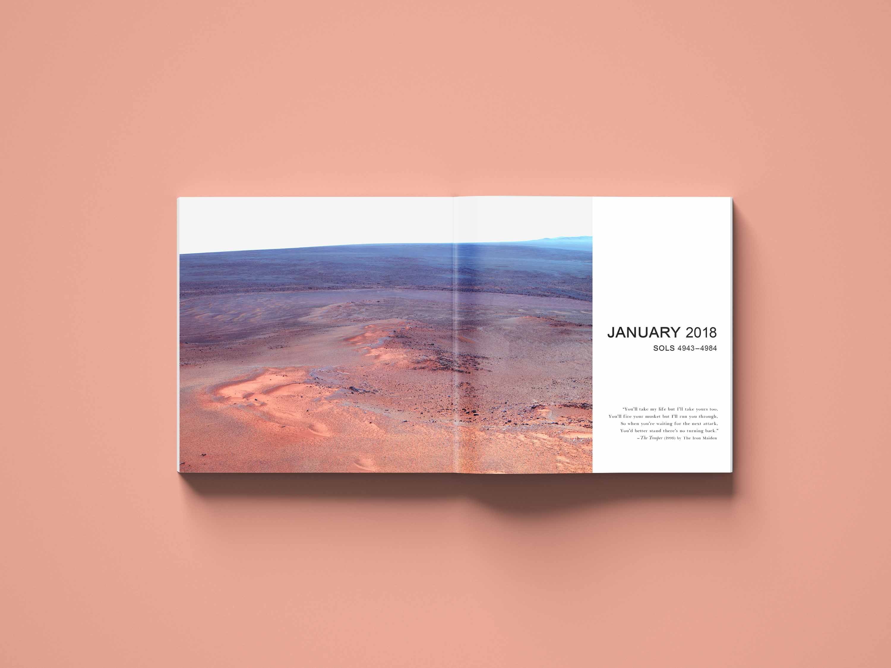
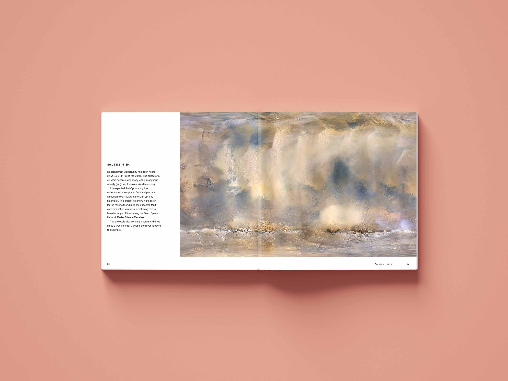

The Last Year
Book Design
December 2019
10"x10"
The Last Year is a text and image book chronicling the last twelve months of reports from the NASA Opportunity Mars rover prior to its missions' end. Each month is described in relation to the number of days (sols) on Mars and juxtaposes raw data and photographs transmitted by Opportunity beside lyric exerpts from songs that NASA played to the rover in the hopes of re-establishing contact.


